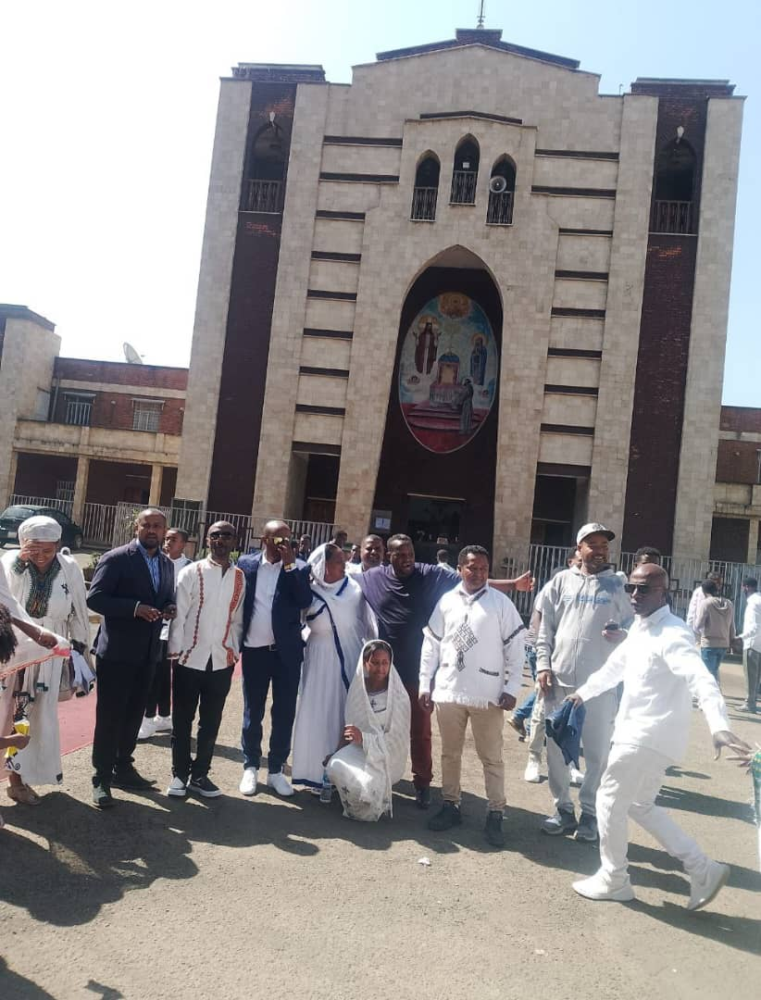
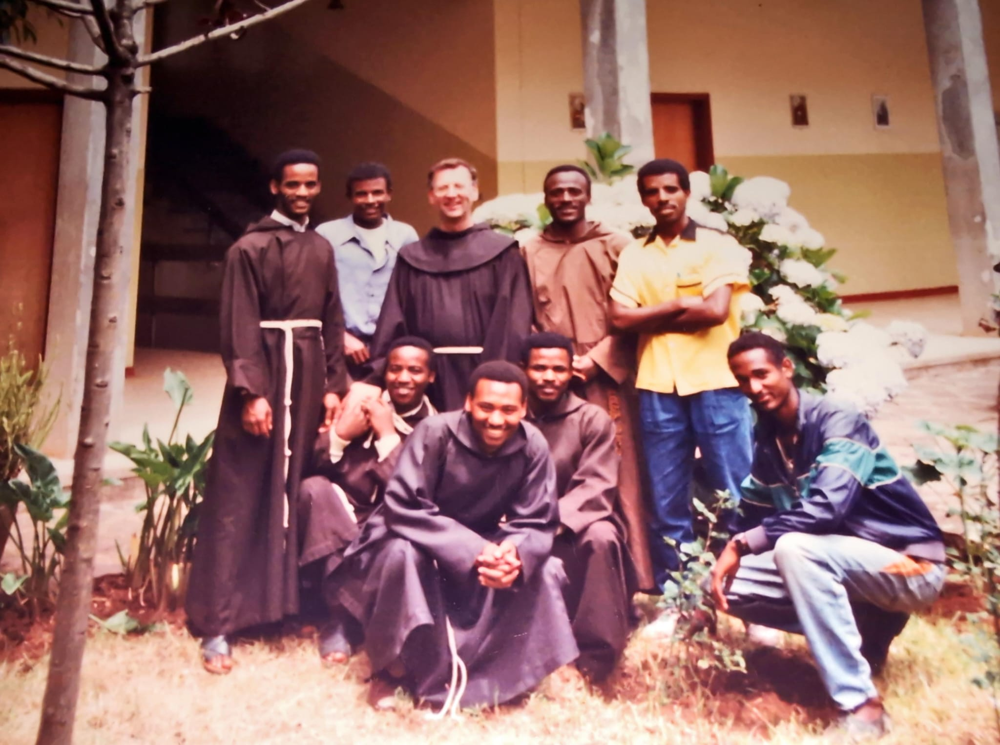

Saint Francis Asco is a vibrant Catholic parish located in Addis Ababa, Ethiopia. Our mission is to serve the community through worship, education, and charitable activities inspired by the life of Saint Francis.
| Day | Time | Language |
|---|---|---|
| Sunday | 7:00 AM, 9:00 AM, 11:00 AM | Amharic / English |
| Monday - Friday | 7:00 AM | Amharic |
| Saturday | 8:00 AM | Amharic |


Address: Asco, Addis Ababa, Ethiopia
Phone: +251 11 000 0000
Email: parish@saintfrancis-ascoparish.et